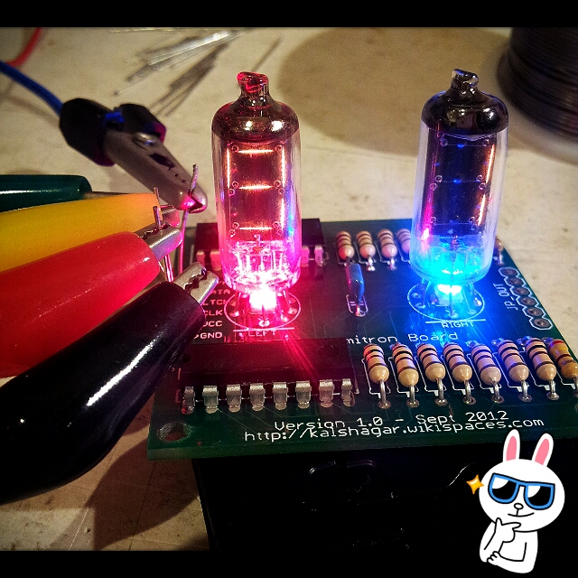
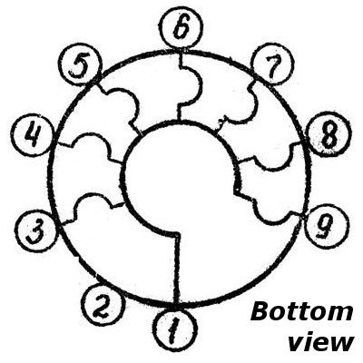
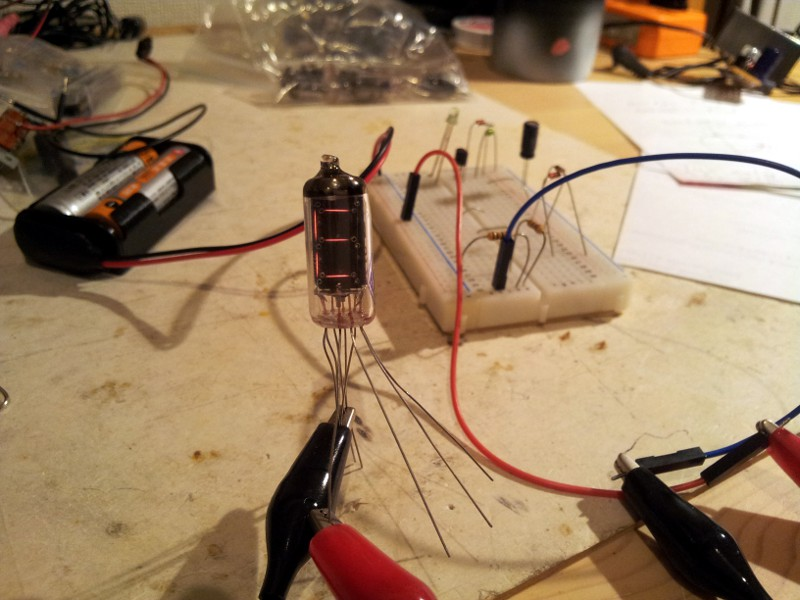
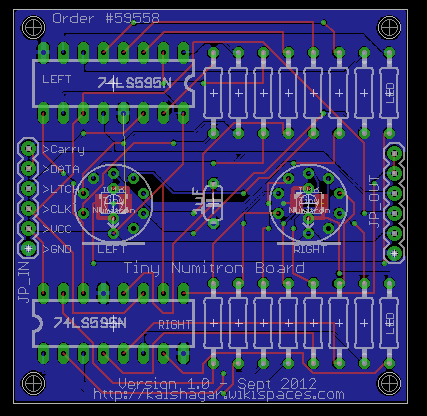

All the Eagle models are in my library kalshagar.lbr
All the Eagle models are in my library kalshagar.lbrIV-16 tiny numitron
A bit less than 3cm high, nice 7 segment working between 2.8-4.5 V, 17-22mA.
|
 BOTTOM VIEW
The Eagle models are in my library kalshagar.lbr |
|  |
 My TinyNumitronBoard, with space for a led SMD or through hole behind each numitron.
|
IV-9 tiny numitron
A bit more than 3cm high, nice 7 %20 dot segment working between 2.8-4.5 V, 17-22mA. Basically it's the same as a IV-16 but a bit taller and with a dot.
|
BOTTOM VIEW
The Eagle models are in my library (use the IV-16 model) kalshagar.lbr |
IV-6 Numitron
 Need a bit more voltage (from 12 to 25-30V), but less amps, has a dot too. VFD style blue glow... nice. It was very hard to find documentation about thoses tubes on the net, but finally thanks to the 2 top links here under I could make it work. So I made a for-dummies (that includes me) pinout graph. Hope this helps. The Eagle models are in my library kalshagar.lbr.
Need a bit more voltage (from 12 to 25-30V), but less amps, has a dot too. VFD style blue glow... nice. It was very hard to find documentation about thoses tubes on the net, but finally thanks to the 2 top links here under I could make it work. So I made a for-dummies (that includes me) pinout graph. Hope this helps. The Eagle models are in my library kalshagar.lbr.- Project http://mintelectronics.wordpress.com/2012/08/05/iv-6-vintage-sovietnumitron-tubes/
- Project http://www.electronixandmore.com/projects/vfdclock/index.html
- General stuff about VFD http://www.techtir.ie/technical/vfd
- Other site (Japanese) https://sites.google.com/site/likipong/kitto-lei/vfd-ying-guang-biao-shi-guan
Things to know about the IV-6 pinout:
- There are 12 pins, 11 being used and 1 not connected (the short one)
- Filament (pins 7 and 8)
- No polarity, voltage 1-2v: if more than 1v (ie. 1.3v) the filament will slightly glow orange, maybe you want to avoid.
- One of the pin must be connected to the high voltage GND. Making both Fil- and GND same seems good sense.
- Grid (pins 9 and 7 or 8)
- Wire pin 9 to VCC high voltage (12-25v)
- GND must be connected to one of the filament pin (see above) to act as a comon cathode
- The short wire is not connected
- Any other wire if connected to VCC high voltage will start glowing nicely
Note on high(er) voltage
"High" -30v, 6x more than TTL- voltage so drive with transistor or dedicated IC, not directly from uC- Sample here http://renaud.schleck.free.fr/nixie.php
$ 1 5.0E-6 10.20027730826997 50 5.0 50 t 368 272 400 272 0 1 -24.331758705484845 0.5553715775756665 100.0 t 448 240 496 240 0 -1 -0.4999403492132366 -0.668681313163944 100.0 R 416 128 416 96 0 0 40.0 30.0 0.0 0.0 0.5 r 400 128 400 240 0 100000.0 r 368 272 272 272 0 100.0 w 416 128 400 128 0 w 416 128 496 128 0 w 496 128 496 224 0 w 448 240 400 240 0 w 400 240 400 256 0 w 496 256 496 288 0 s 272 272 208 272 0 0 false R 208 272 160 272 0 0 40.0 5.0 0.0 0.0 0.5 r 400 288 400 352 0 10000.0 g 400 352 400 384 0 r 496 288 496 368 0 730.0 g 496 368 496 384 0 o 15 64 0 35 40.0 0.05 0 -1
Links
- Nice clock from Akafugu http://www.akafugu.jp/posts/products/vfd-modular-clock/assembly-base/
Shopping
- The very good http://www.tubes-store.com/ : bought some tubes from them, fast, clean, no problem. Will use them again for sure.
- In Japan (but is it still working?) http://nixie-tube.com/shop/index.html